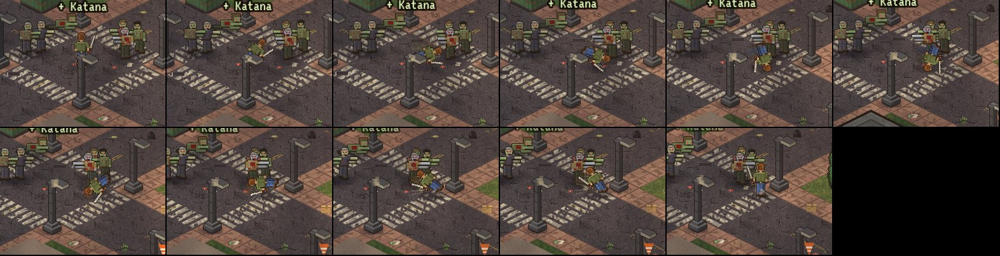
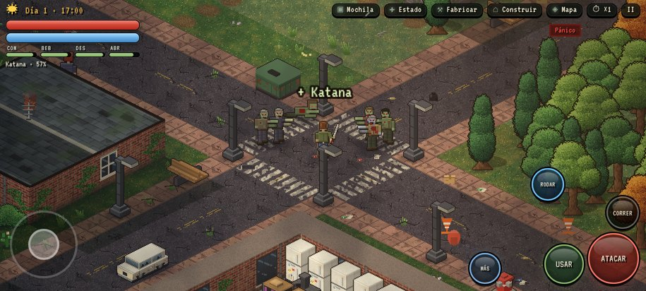

Último Refugio v17.4 «Rueda y esquiva»
Hola equipo: ya está la v17.4. Trae una mecánica nueva de combate y necesito que la prueben en teléfonos reales.
Lo nuevo
- RODAR: botón azul nuevo encima de USAR (en el PC, tecla Z). Voltereta rápida en la dirección en la que se mueven; sin dirección, hacia atrás.
- Durante la voltereta los golpes de zombis, el salto del saltador y los golpes de bandidos no los alcanzan un instante. Las balas y los golpes de otros jugadores sí.
- Gasta aguante y hay una breve espera entre una y otra (el botón se oscurece).
- Si pulsan ATACAR mientras ruedan, el golpe sale al levantarse.
- En las salas, los demás ven su voltereta.
- Teléfonos justos: desde la segunda partida la calidad ya empieza ajustada y la cámara no se acerca de golpe.


Qué necesito que prueben
- ¿El botón RODAR se ve bien y no tapa nada? (Ajustes → Personalizar permite moverlo.)
- Rodar entre 3 o 4 zombis: ¿esquiva? ¿Se siente bien, o es demasiado larga/corta?
- Rodar contra una pared o un auto: ¿se atora o atraviesa algo?
- En una sala con otro teléfono: ¿el compañero ve la voltereta?
- Teléfono modesto: jueguen 2-3 minutos, salgan, vuelvan a entrar: ¿la cámara cambia de zoom de golpe al empezar?
Cualquier cosa rara, con captura y modelo de teléfono. ¡Gracias!